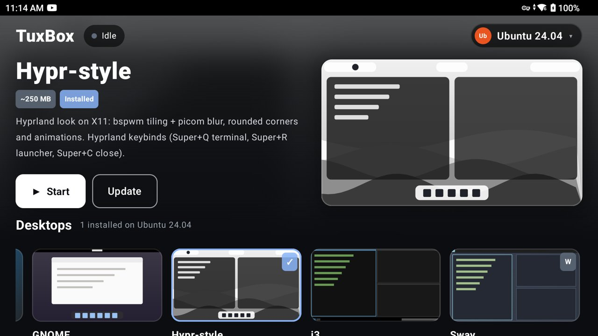
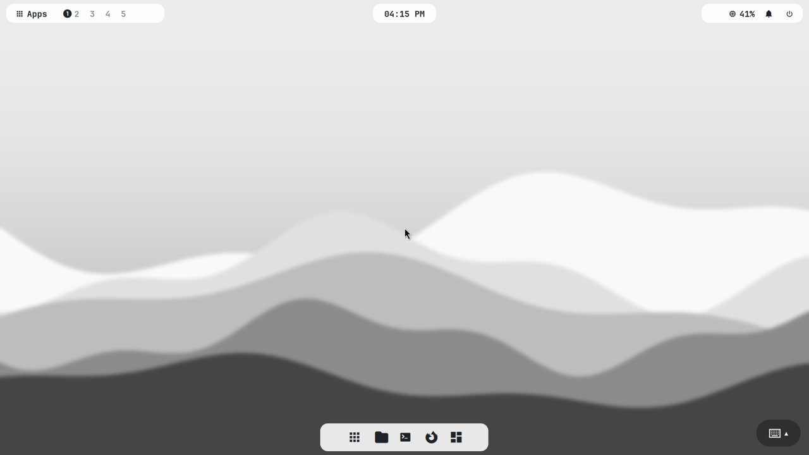

Full Linux desktops on Android — no root. Pick a distro and a desktop, tap Start. Built-in X server with real Adreno GPU acceleration and controller support.
⬇ Download APK Source on GitHub

TuxBox.apk above and open it (allow “install unknown apps” if asked).Android 8+, ARM64 or ARMv7. Android 12+: enable Developer options → “Disable child process restrictions” for heavy desktops.